公共資訊更透明
活動、補助、回饋及公共資源，依法可以公開的，讓居民更容易知道。
我們今天做的選擇，
決定十年後生活的樣子。
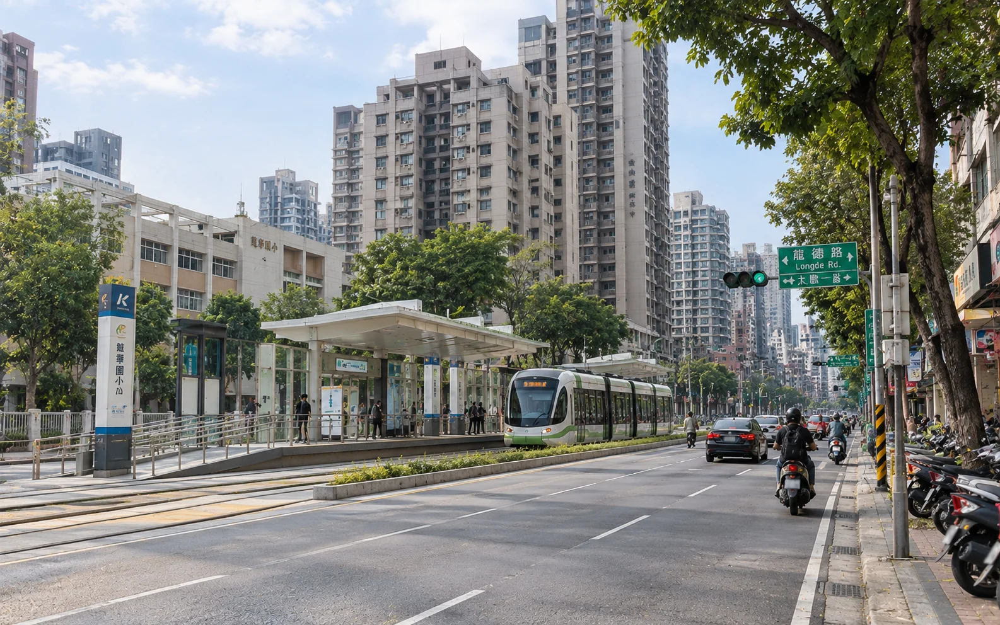
曾偉修，邀請您一起想想
龍子里的下一步。
龍子里需要的，不一定都是大建設。很多改變，就從每天遇得到的小事情開始。
活動、補助、回饋及公共資源，依法可以公開的，讓居民更容易知道。
收到、確認、通報、追蹤、回覆，讓居民知道事情進到哪裡。
關心通學路線、危險路口與接送動線。
手機、LINE、定位、AI與防詐，從生活需要開始。
關心 YouBike、捷運、輕軌與社區間的移動路線。
關心施工、車流、停車、人行與周邊環境。
電話、LINE、網路、現場，都能找到服務管道。
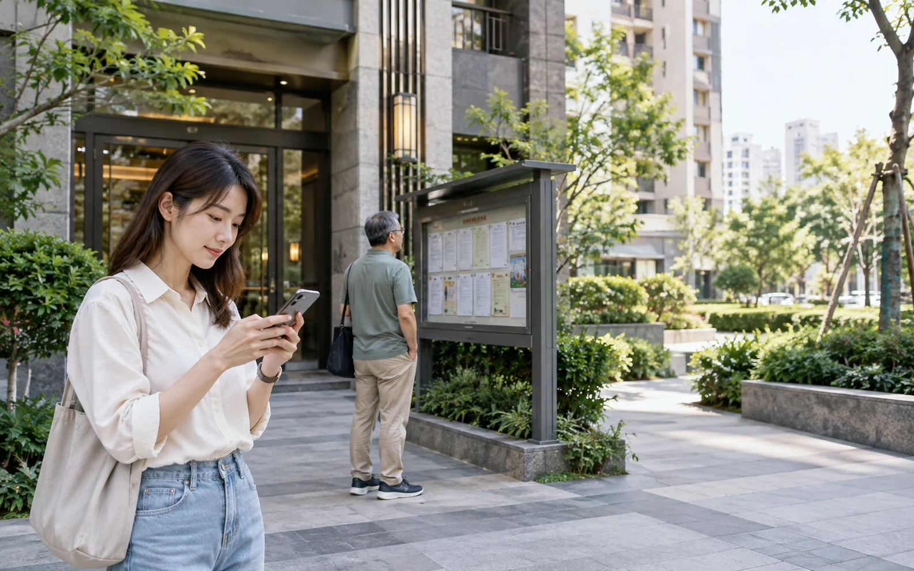
有人白天上班、晚上回家；有人不參加固定活動，也沒有加入特定群組。如果資訊只有少數傳遞方式，就容易有人知道、有人不知道。
依法可以公開的，就讓居民更容易：看得到、找得到、用得到。
資訊公開，更重要的是讓居民真正收到。
生活圈概念示意，不作精確里界或導航使用。正式上線可替換為 GIS／Three.js 地標視覺。
每天經過大順一路、博愛二路、神農路、龍德新路，可能很少有人特別去注意周邊大型商業設施與開發。
除了「有什麼新的建設」，居民也可以更清楚知道：有哪些公共資源、活動、補助或福利？誰可以參加？要去哪裡知道？
不同建設、不同資源都有不同規定，不能混在一起，也不能因為有大型商場，就認定一定有地方回饋。
公共的事情，本來就值得說清楚。
居民反映事情後，最在意的往往不只是一句「收到」，而是後續結果是什麼。
先建立案件，不讓問題消失在訊息裡。
釐清位置、情況與可協助範圍。
需要權責單位處理的，協助轉達。
不是送出就結束，持續確認進度。
把能做、不能做、目前進度說清楚。
不只說「已經反映」，也讓居民知道「結果是什麼」。
真正需要關心的，是孩子從家裡到學校，再平安回家的整段路。
需要改善的地方，現場了解問題，向權責單位反映並持續追蹤。
每天上下學走的路，值得多用一點心。
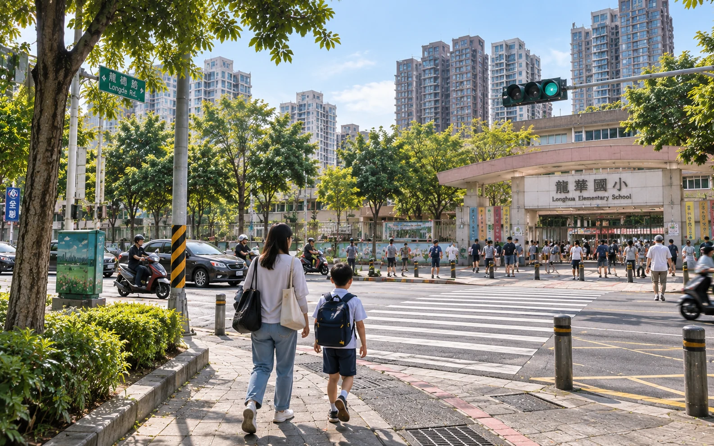
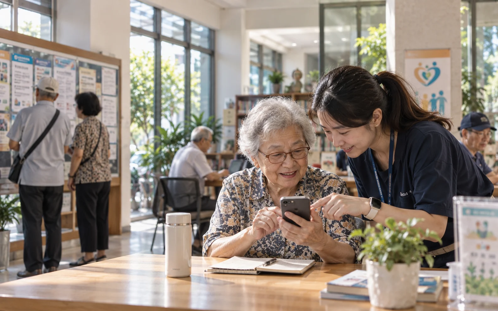
掛號、叫車、LINE、地圖、行動支付，甚至現在的 AI，都慢慢進入日常生活。
不必一次學會所有功能。從生活真正需要的開始，一步一步來。
科技應該帶來方便，不該成為生活的門檻。
里辦公處不能取代醫療，也不能取代專業社福。但可以協助居民了解資源，找到正確的政府、醫療或社福窗口。
先確認需求，再協助找到正確申請與諮詢窗口。
釐清資格與承辦單位，減少重複詢問與奔波。
需要醫療專業時，引導到適合的醫療或官方資訊。
獨居或需要關懷者，協助連結可使用的服務。
幫忙把人，找到對的窗口。
交通方便，不只是車站離家近。社區、YouBike、捷運、輕軌與最後一段回家的路，都在同一條生活動線裡。
從家門口出發，再平平安安回到家。
新的商場、住宅、辦公與公共建設，帶來生活機能，也可能改變原本的環境。
大型開發不是里長可以決定要不要蓋。但居民受到的影響，可以整理、反映，也可以持續關心後續。
歡迎建設，也要顧好生活品質。
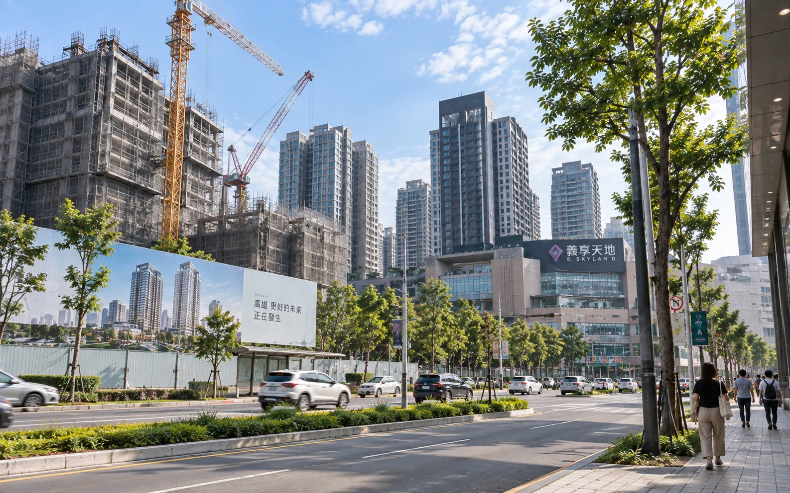
一個坑洞、一盞不亮的路燈、一段堵塞的水溝，看起來都是小事，卻是居民每天真正會遇到的問題。
道路坑洞、水溝清淤、積水環境、道路標線與行車視線。
路燈故障、雜草整理、路樹修剪與需要維護的公共空間。
發現問題，不只轉傳訊息；先釐清位置、情況與影響。
能協助處理的就協助；需要其他單位處理的，就反映並追蹤。
小事情有人在意，生活就多一點安心。
候選人自述：多年參與地方民防工作，讓他更重視第一線的預防、通報與聯繫。
遇到問題時，除了即時通報，也重視居民、社區與警政之間的聯繫。
社區一起留意，生活就多一分安心。
道路施工、停水停電、交通異動、活動及重要公告，可透過不同管道提供資訊。
有人習慣打電話，有人習慣 LINE；年輕人可能比較習慣網路，也有長輩喜歡面對面把事情說清楚。
不是要求居民適應里辦公處，而是讓服務跟得上居民。
住的地方不同，生活中遇到的問題也不完全一樣。不同的生活需要，都值得被看見。
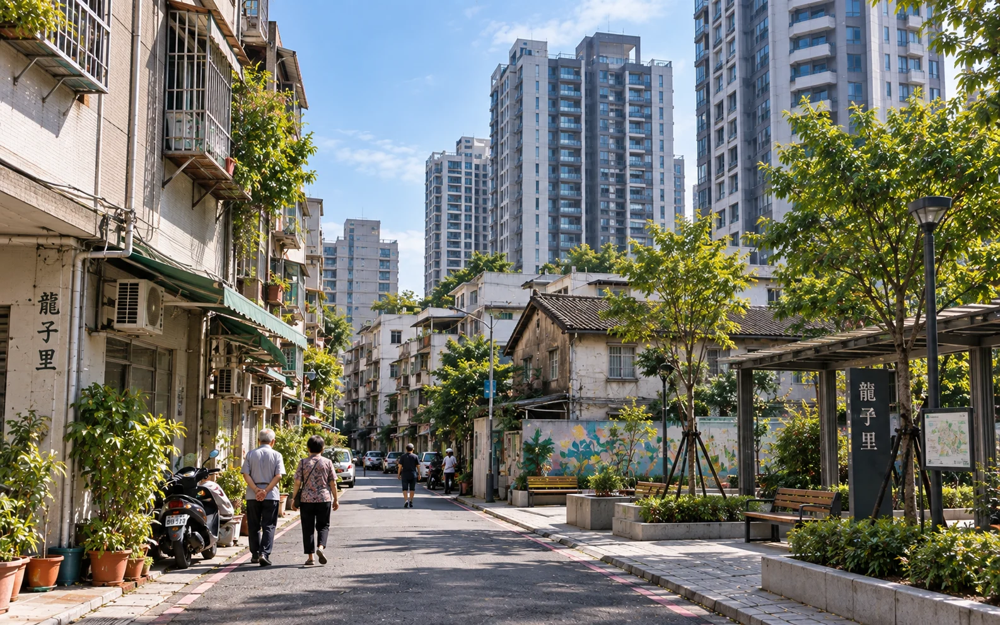
交通、停車、施工影響、公共建設、社區協調，以及與管委會之間的資訊聯繫。
道路、水溝、環境整理、長者生活、巷弄安全，以及日常生活問題的快速反映。
不管住在新大樓，還是老社區，遇到問題時，都能有地方反映。
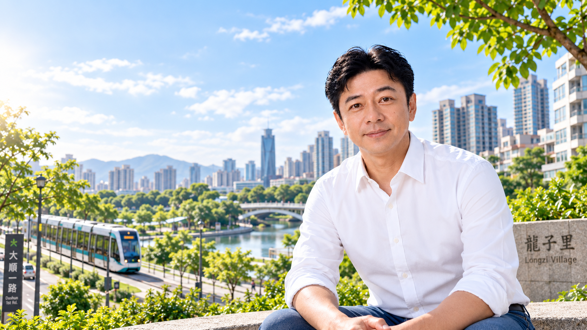
曾偉修的人生經歷橫跨軍旅、第一線業務、海外產業管理、創業、地方公共事務與社區服務。過去的工作背景不只是一份履歷，更重要的是如何把累積的協調、管理與第一線服務經驗，帶回每天生活的地方。
2022 年曾參選高雄市鼓山區龍子里里長，獲得 1,545 票。這段參選經驗，也成為後續持續投入地方公共事務的一部分。2022 年的得票數可由中央選舉委員會選舉結果資料核對。
「很多事情不一定能一步到位，但有人願意接、願意追、願意把事情處理到有結果，就會不一樣。」
對地方服務而言，真正重要的是居民需要時找不找得到人、問題有沒有被接住、反映之後有沒有後續。
這裡只保留曾偉修本人的學歷、工作、公共服務與參選經歷，不把舊版網站的政策、地方介紹或其他設計內容搬進來。
曾服空軍義務役；既有資料記載退伍時獲頒空軍總司令獎狀。
退伍後曾有味之素第一線業務工作經驗，累積市場與客戶溝通經驗。
曾任馬來西亞電子產業管理職，並參與馬來西亞台灣商會及當地學校相關公共事務。
曾赴中國舟山從事冷凍水產產業管理工作；2022 年選舉公報亦列有相關公司副總經理經歷。
返台後投入通訊產業創業與門市經營；既有資料記載 2021 年創立精品咖啡品牌。
曾任立法委員服務處助理，接觸地方陳情與政府部門協調；並長期參與龍華派出所民防工作。
既有資料記載，50 歲後完成正修科技大學企業管理系學業。
首次參選龍子里里長。中央選舉委員會公布結果顯示，曾偉修獲得 1,545 票。

早期軍旅生活照片。
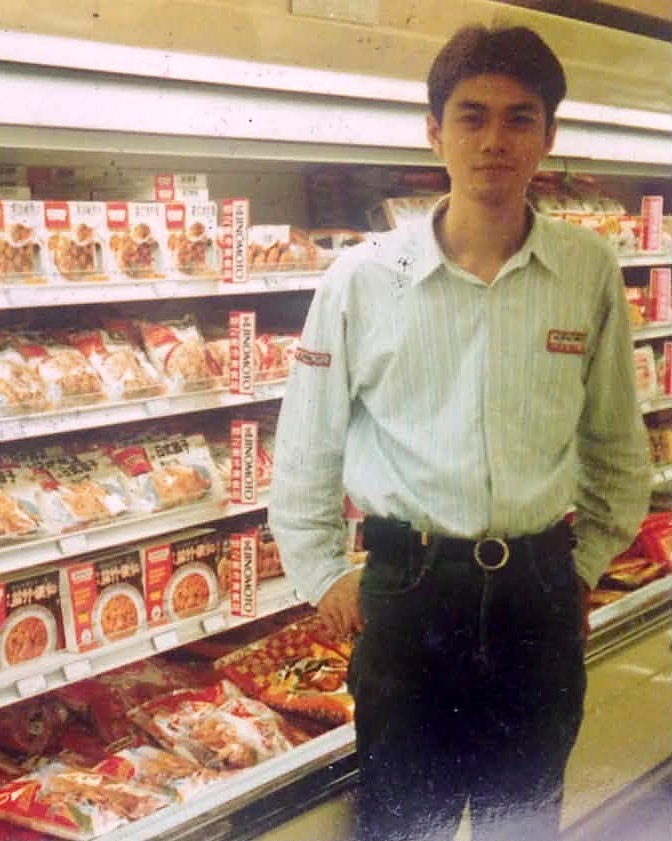
在賣場與市場端累積第一線工作經驗。
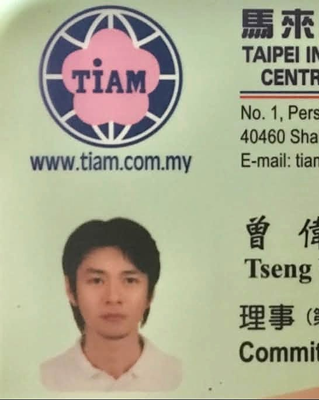
海外工作期間的台商組織相關紀錄。
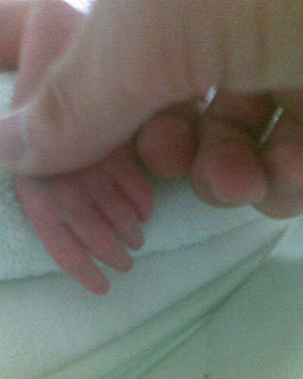
家庭因素促成返台與後續生活方向調整。
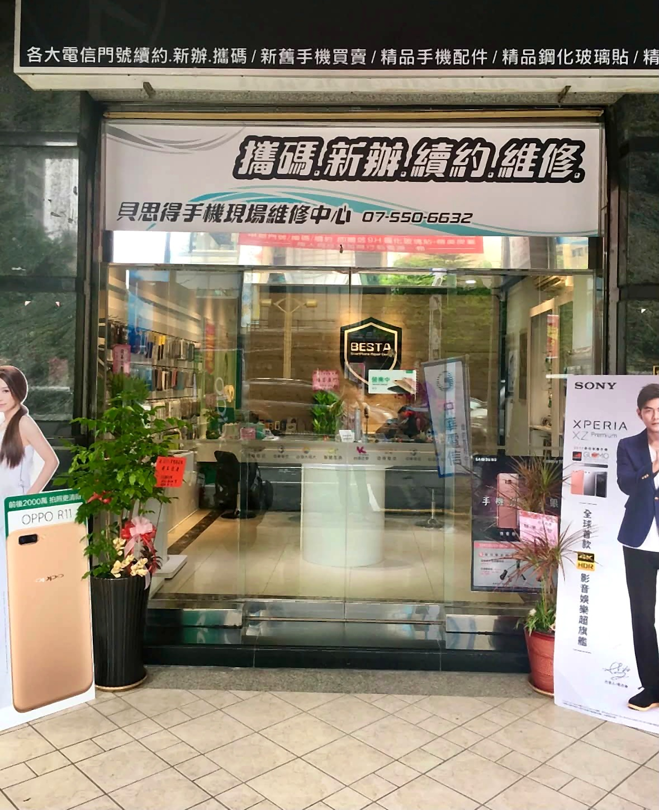
返台後投入通訊產業與門市服務。

長期參與地方民防相關工作。

2021 年後投入精品咖啡品牌經營。

完成企業管理系學業的畢業紀錄。
可能是一個孩子每天經過的路口，一支長輩不會操作的手機，一段每天從社區走向捷運、輕軌，或騎 YouBike 的路。
也可能是一個下雨後出現的坑洞、一盞沒有亮的路燈、一段需要清理的水溝，或是一項與居民有關的活動與公共資源。
把問題看見。把事情說清楚。把可以做的，一件一件做好。
如果您也關心龍子里的生活議題，歡迎透過下方入口進一步了解，或留下想反映的事情。